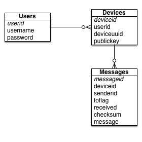

This provides an overview of the SecureChat server source kit, including the database components, servlet components and notification service.
The SecureChat server is deliberately designed to be as minimal as possible, serving principally as a public key keystore and a message queue for sending and receiving messages between chat clients.
The principle design goal for the SecureChat server is to reduce exposure to a hacker or agency from capturing message data or useful metadata through the following techniques:
These design goals make the server very simple: as no identifying information needs to be stored, the server database schema is quite simple:
The protocol used by the server to communicate with the client is also equally simple, and is documented separately.
The current SecureChat server is not designed to scale to handle a large number of users, but to describe a system which can better protect communications between a smaller number of users. To scale some changes would need to be made to the way messages are stored in the database and to the way notifications would be handled.
The class Config (com.chaosinmotion.securechat.server.config) provides a standard mechanism for loading a configuration file for identifying the database and database credentials. This class looks for the securechat.properties file from the following locations, in order:
You need to modify this class if you need to store the configuration file at a different location.
The format of the configuration file is as follows:
# Database connection properties dburl = jdbc:postgresql://hostname:port (i.e., 5432)/database username = postgresql username password = postgresql password
The SecureChat server by design expects to communicate with a PostgreSQL database. The configuration is obtained from the configuration settings above.
When first started, the class DatabaseBuilder verifies that a version table is present in the database, and uses that to read the current version of the schema stored in the database. This then is used to determine which of the schemaN.sql files are read to initialize the database schema.
This design allows us to incrementally upgrade the server in the future; on startup, each schemaN.sql file contained in the package com.chaosinmotion.securechat.server.database is read, starting with the first unread schema file determined by the version number stored in the version database. This implies that each schema file contains the changes from the previous schema to update to the current version.
The package com.chaosinmotion.securechat.rsa contains a subset of the classes described on the client front end to perform RSA encoding and key management. This is used to allow the server to send admin messages to each device in response to admin events.
Network requests received by the SecureChat server are received by the classes declared in com.chaosinmotion.securechat.server, which parse the incoming POST requests, determine if the user is authenticated to make the call, and calls the appropriate command class (described below) to actually handle the command. There are three servlets which handle each of the three groups of network requests: LoginServlet handles requests to the /login URI, DeviceServlet for /device and MessageServlet for /messages requests. A fourth servlet, ValidateServlet is used to determine if the SecureChat server has been set up correctly and to help identify the correct URL for chat clients to use.
This uses the JSON parser library for Java for parsing incoming requests. Responses are also constructed using the classes defined in com.chaosinmotion.securechat.server.json, including standard error responses and the more complex response payloads.
The com.chaosinmotion.securechat.commands package contains the individual classes which handle each of the 11 major network requests that a client can make. This is the "business logic" of the SecureChat server.
The logic for handling sending messages to a specific user is handled by the MessageQueue class contained in com.chaosinmotion.securechat.server.messages. This class contains logic for identifying a device from the device's UUID, for inserting a message into the database, and for sending out a notification to all devices that are listening for notifications. This also contains the logic for sending an admin message when the user requests to reset his password, and can by extension be used to extend the types of admin messages sent in the future.
Notifications allow a chat client to immediately receive a message when a sender sends them a chat message. The notification mechanism used by SecureChat involves each client connecting to an advertised TCP/IP socket, logging into that socket, and then receiving messages as they are enqueued by the MessageQueue class.
The code which listens for incoming requests is NotificationService, which uses Java sockets to create a socket listener; individual connections are managed by NotificationSocket